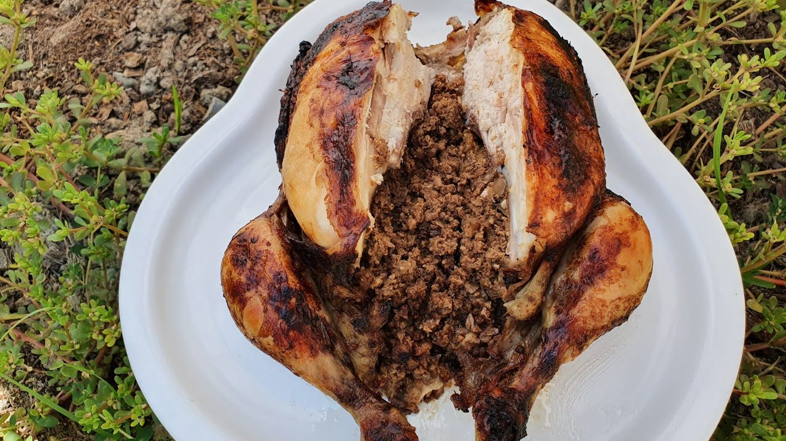

Home
Lavangi recipe

Description
Azerbaijani Chicken Lavangi is a traditional dish where a whole chicken is stuffed with a walnut-onion-herb
mixture and baked. The walnuts add richness, the herbs add freshness, and the slow cooking makes the chicken
tender and flavorful. It’s often served during holidays or family celebrations.
Ingredients
- 1 whole chicken (about 1–1.5 kg), cleaned and skin intact
- 2–3 tbsp vegetable oil or melted butter
- Salt and black pepper to taste
- 1 cup walnuts, finely ground
- 2 medium onions, finely chopped
- 1 tsp paprika
- 1/2 tsp ground coriander (optional)
- 1/4 tsp ground cinnamon (optional)
- 1–2 cloves garlic, minced
- 1/2 cup fresh herbs (cilantro, parsley, dill, or a mix), finely chopped
- 1 tsp dried sumac (optional, for tartness)
- Salt and pepper to taste
- 2–3 tbsp pomegranate molasses or lemon juice (optional, for tanginess)
- 1–2 tbsp vegetable oil or melted butter (to mix into stuffing)
- Saffron soaked in warm water (for aroma and color)
- Pomegranate seeds for garnis
Steps to prepare
- Pat the chicken dry. Rub the outside with salt, pepper, and a bit of oil.
- Ensure the cavity is clean for stuffing.
- Mix ground walnuts with onions, garlic, herbs, paprika, sumac, salt, pepper, and optional spices.
- Add a little oil or butter to make it slightly sticky and easier to stuff.
- Carefully fill the cavity of the chicken with the walnut-onion-herb mixture.
- Close the cavity with kitchen twine or toothpicks to secure the stuffing.
- Preheat oven to 180°C (350°F).
- Place the stuffed chicken in a baking dish. Brush the outside with oil or melted butter.
- Cover with foil and bake for 45–60 minutes, depending on size.
- Remove foil in the last 10–15 minutes to brown the skin.
- Optionally, drizzle saffron water or pomegranate molasses over the chicken before serving.
- Let the chicken rest for 10 minutes after baking.
- Garnish with fresh herbs or pomegranate seeds.
- Serve with rice, plov, or flatbreads.